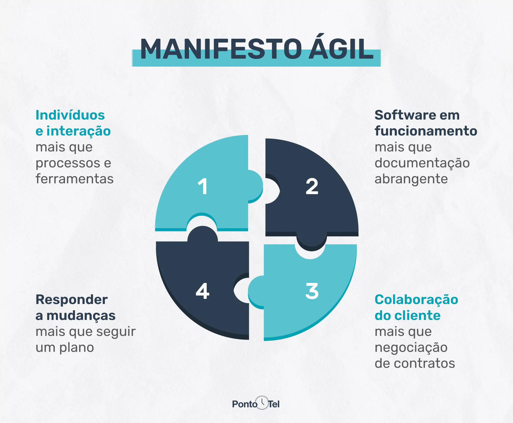
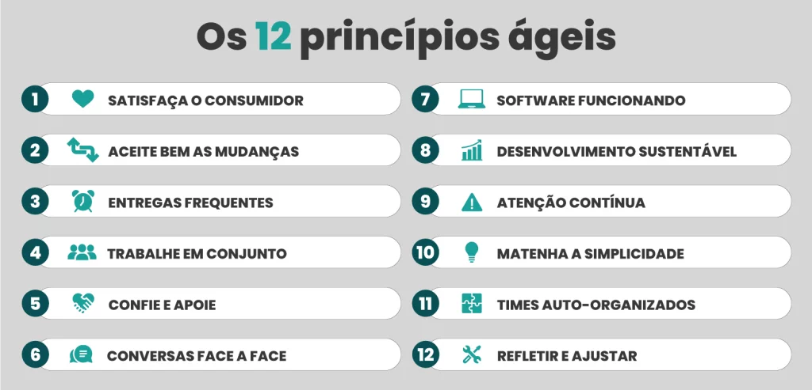
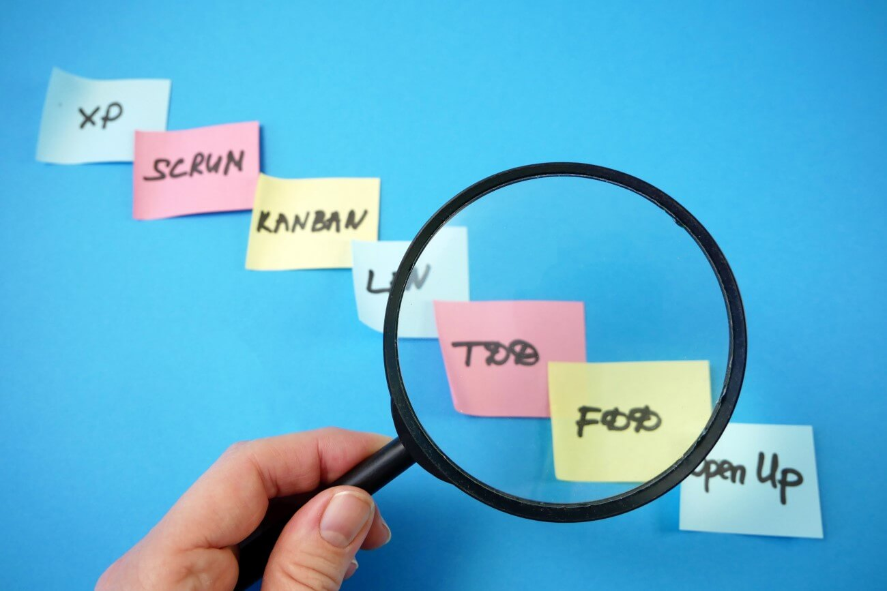
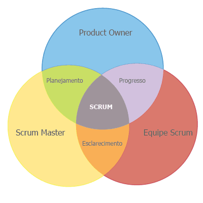
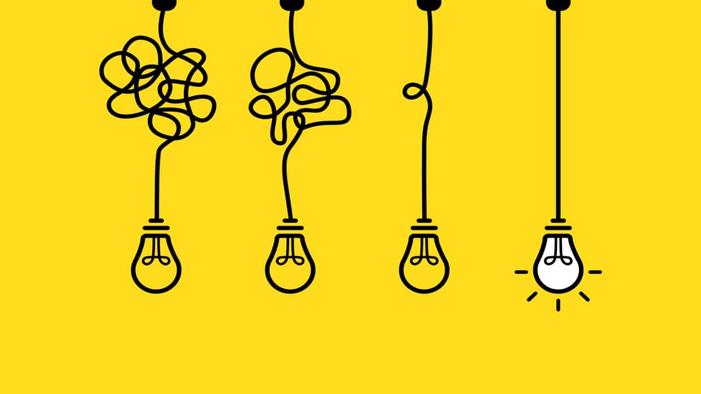

Conceito do Manifesto Ágil
orientar as ações das equipes de trabalho, alinhando expectativas, tarefas, objetivos e ações das equipes multidisciplinares.

Valores do Manifesto Ágil
Os 4 valores fundamentais que regem os 12 princípios ágeis.

12 princípios ágeis
De acordo com os Princípios Ágeis, a prioridade é satisfazer o cliente.
Características da metodologia ágil
tornar os processos menos engessados, de modo a priorizar não a necessidade das empresas, mas dos clientes.

Métodos tradicionais vs Métodos ágeis
Abordagem linear e ênfase na rigidez vs processos iterativos e colaborativos.

3 Tipos de metodologias ágeis
Três tipos de metodologias ágeis mais usadas nas empresas.

3 perfis presentes no scrum team
Equipe auto-organizada e multifuncional responsável pela execução de projetos dentro do framework.

Como e onde utilizar a ferramenta Design Thinking
Utilizada para estimular a inovação a partir do pensamento criativo.